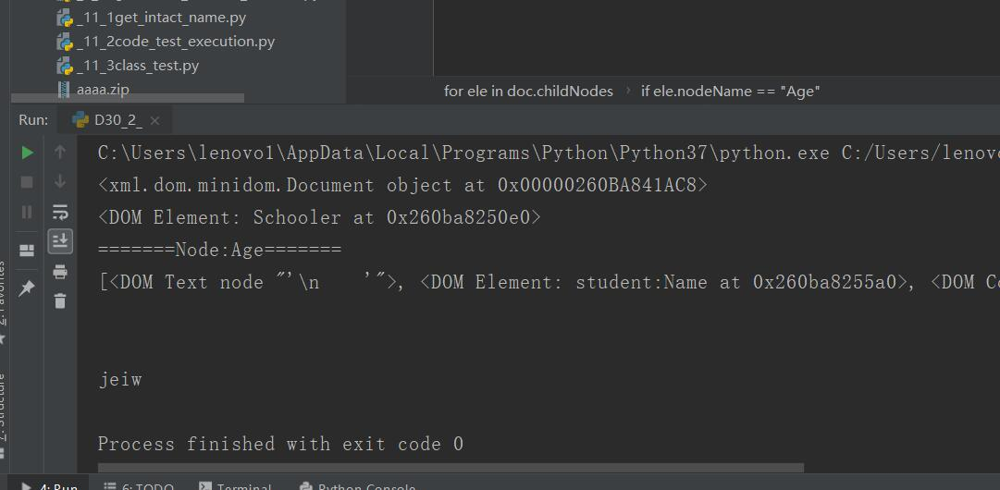
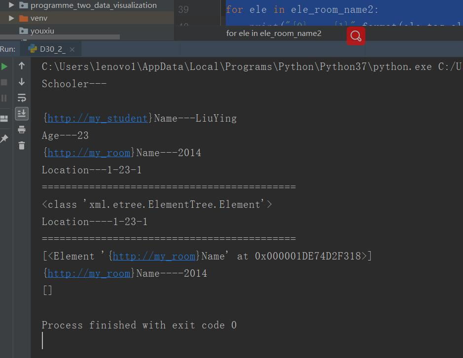

原文出处:本文由博客园博主心悦君兮君不知-睿提供。
原文连接:https://www.cnblogs.com/ruigege0000/p/11741579.html
原文连接:https://www.cnblogs.com/ruigege0000/p/11741579.html
一、我们对XML的读取进行一波演示
import xml.dom.minidom
#负责解析xml文件的包
from xml.dom.minidom import parse
#使用minidom打开xml文件
DOMTree = xml.dom.minidom.parse("D30_1_XmlNameSpace.xml")
print(DOMTree)#将该XML文件定义为一个对象
#得到文档对象
doc = DOMTree.documentElement#打印出了带有根目录的名字的对象
print(doc)
#显示子元素
for ele in doc.childNodes:
if ele.nodeName == "student:Name":
print("=======Node:{0}=======".format(ele.nodeName))
print(doc.childNodes)
if ele.nodeName == "Age":
print(ele.getAttribute("jio"))#获取某一节点的属性值

同时我们还可以使用xml.DOM.etree这种方式来进行解析
我们提供方法：
（1）以树形结构来表示xml；
（2）root.getiterator:得到相应的可迭代的node集合
（3）root.iter
（4）find(node_name):查找指定node_name的节点，返回一个node
（5）root.findall(node_name):返回多个node_name的节点
（6）node.tag:node对应的tagename
（7）node.text:node的文本值
（8）node.attrib:是node的属性的字典类型的内容
i
mport xml.etree.ElementTree
root = xml.etree.ElementTree.parse("D30_1_XmlNameSpace.xml")
nodes = root.getiterator()
for node in nodes:
print("{0}---{1}".format(node.tag,node.text))
print("===========================================")
ele_room_name = root.find("Location")
print(type(ele_room_name))
print("{0}----{1}".format(ele_room_name.tag,ele_room_name.text))
print("===========================================")
ele_room_name2 = root.findall("{http://my_room}Name")#这里如果使用“room:Name”是解析不出来的
print(ele_room_name2)
for ele in ele_room_name2:
print("{0}----{1}".format(ele.tag,ele.text))
ele_room_name2 = root.findall("room:Name")
print(ele_room_name2)
for ele in ele_room_name2:
print("{0}----{1}".format(ele.tag,ele.text))
三、源码
D30_2_XmlAnalysis.py
https://github.com/ruigege66/Python_learning/blob/master/D30_2_XmlAnalysis.py
2.CSDN：https://blog.csdn.net/weixin_44630050（心悦君兮君不知-睿）
3.博客园：https://www.cnblogs.com/ruigege0000/
4.欢迎关注微信公众号：傅里叶变换，个人公众号，仅用于学习交流，后台回复”礼包“，获取大数据学习资料